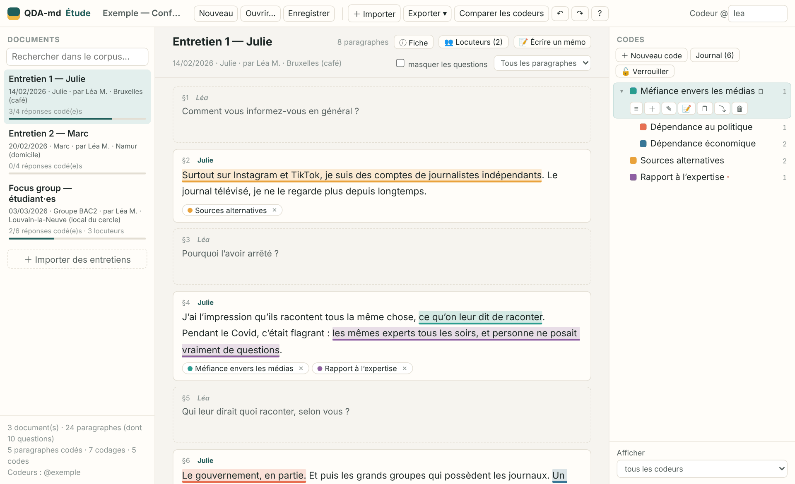

Qu’est-ce que QDA-md Étude ?¶
QDA-md Étude est un logiciel d’initiation au codage qualitatif d’entretiens, conçu pour l’enseignement : on y importe ses retranscriptions, on surligne des passages, on leur attribue des codes, on organise ces codes en arbre et on compare son codage avec celui d’un·e collègue. C’est le même geste que dans MaxQDA, NVivo ou ATLAS.ti, dans un outil volontairement simple.
Toute l’application tient dans un seul fichier HTML. Il n’y a rien à installer : un double-clic l’ouvre dans le navigateur, elle fonctionne hors ligne et aucune donnée n’est envoyée sur internet.
⬇ Télécharger QDA-md Étude 0.2.2

QDA-md Étude peut vous aider si vous…¶
- découvrez l’analyse qualitative et voulez apprendre à coder des entretiens sans investir dans un logiciel payant ;
- préparez un mémoire avec une dizaine ou une trentaine d’entretiens ;
- devez coder à deux et mesurer votre accord (kappa de Cohen), puis construire un codage de consensus ;
- travaillez sur des focus groups et voulez savoir qui mobilise quels thèmes ;
- enseignez la méthode et voulez suivre le travail d’un groupe d’étudiant·es.
Ce qui le distingue¶
- Un projet = un fichier texte (
.qda.md) lisible dans n’importe quel éditeur : le codage n’est pas enfermé dans une boîte noire, on voit exactement ce qui a été noté. C’est le fichier que l’on enregistre, copie, sauvegarde et rend à son enseignant·e. - Les questions et les réponses sont distinguées, les locuteurs ont un pseudo et des caractéristiques (âge, genre, profession…).
- La construction de la grille d’analyse est tracée : chaque création, fusion ou déplacement de code est noté dans un journal, avec son motif.
Comment commencer ?¶
- Installer et ouvrir l’application — deux minutes.
- Prise en main rapide avec le projet d’exemple — dix minutes.
- Préparer vos retranscriptions avant de les importer.
Version
Ce manuel décrit la version 0.2.2 (novembre 2026). QDA-md Étude est la version pédagogique de QDA-md, un outil de codage qualitatif pour la recherche.